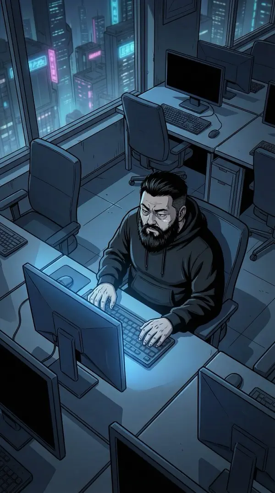
凌晨两点半。整个办公室只剩我一个人，和这个死活跑不通的bug。
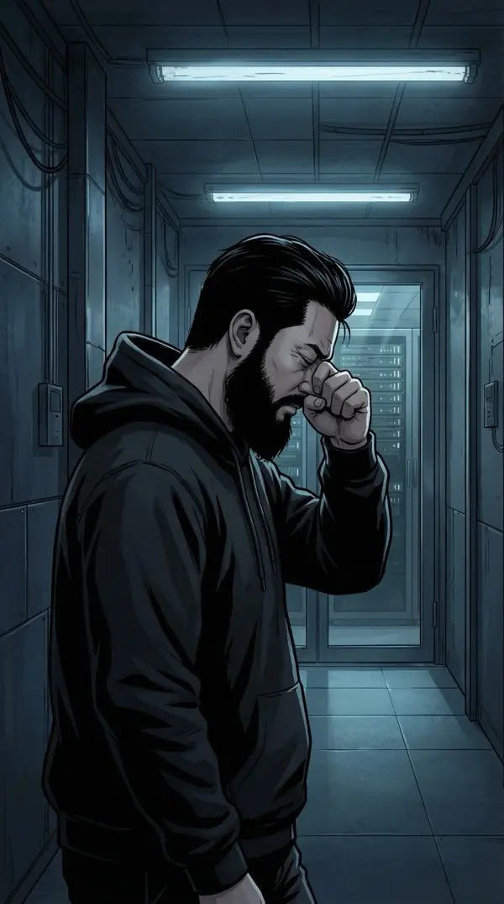
服务器又报警了。我揉了揉酸涩的眼睛，拖着步子往机房走。走廊的灯管闪了两下——事后想来，这大概是命运在打招呼。
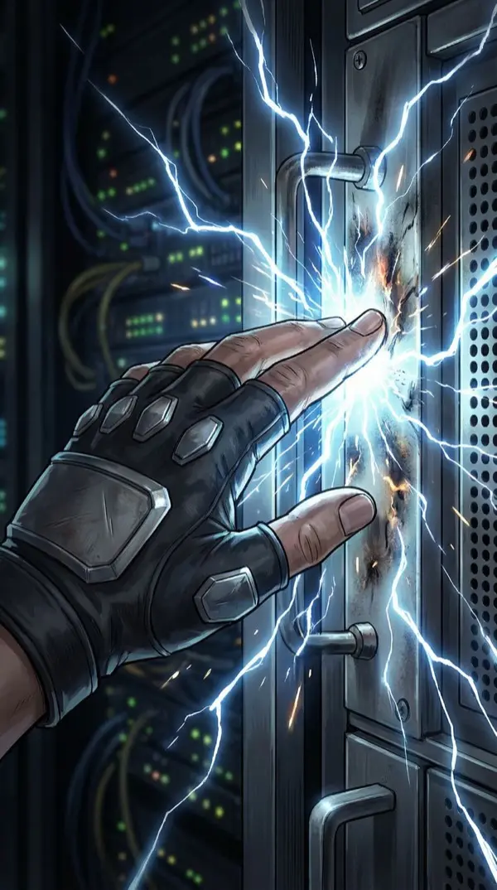
我的手刚碰到机架——
蓝白色的电弧瞬间窜上手臂。整个世界炸成一片白光。
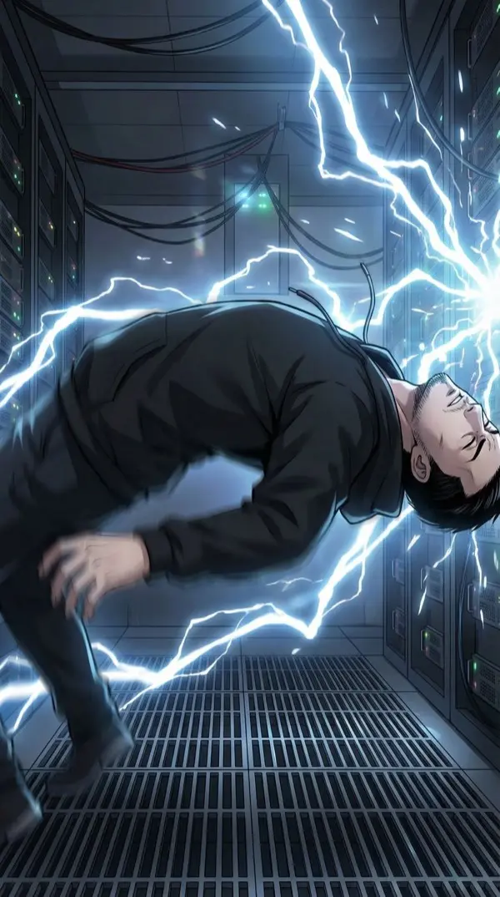
身体被一股巨力弹飞。后脑勺撞上冰冷的地面。机房的灯疯狂闪烁，像黑客电影里的特效——只不过这次，是真的。
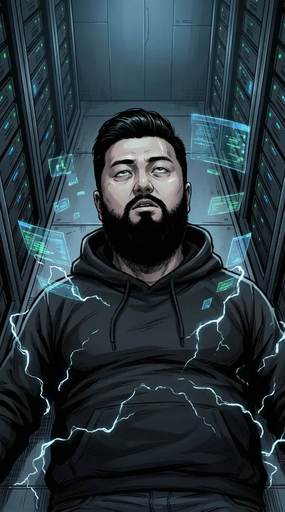
意识模糊前的最后一秒，我好像看到了……空气中飘着蓝色的……碎片？
然后一切归于黑暗。
醒来的时候我在自己工位上。同事说保安发现我躺在机房里，以为我加班猝死了——差点叫救护车。
好消息：没死。坏消息：头疼得像宿醉后被卡车碾过。
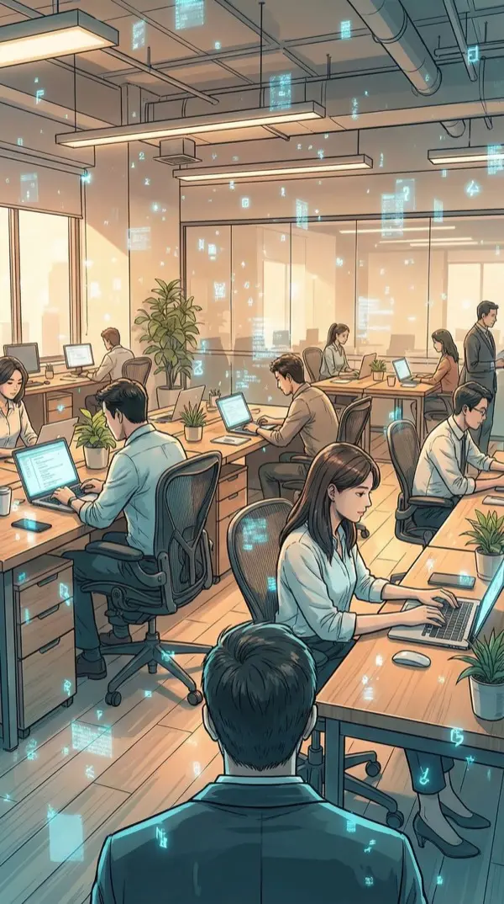
不对……这是什么？
空气中飘着淡蓝色的半透明碎片，像数字雪花一样缓缓飘落。我眨了眨眼——还在。揉了揉眼——还在。
不是幻觉。但周围没有任何人注意到。
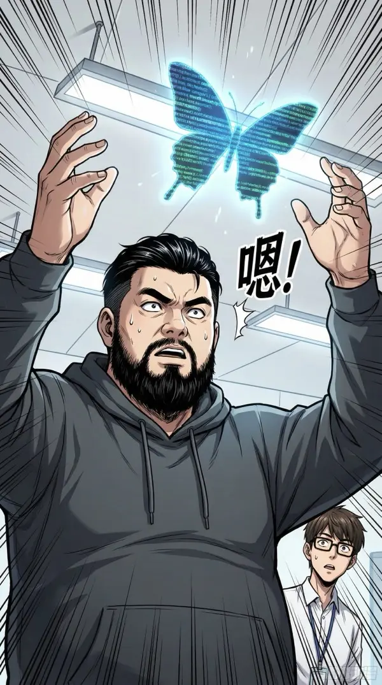
我鬼使神差地伸手去抓了一片——
动作大概像在抓蝴蝶。旁边的产品经理小李侧过头来，那眼神明确写着："这人昨晚加班加傻了？"
我赶紧把手缩回来，假装在做颈椎拉伸。
"久坐嘛……活动活动……"我干笑两声，差点把自己尬死。
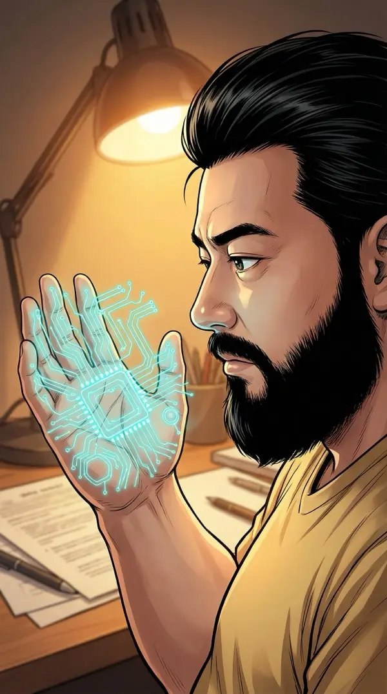
低下头，我看到自己掌心有蓝色的纹路在流动，像活着的电路图。
好吧。看来不是后遗症这么简单。
下午的投资人会议。我换了衬衫——虽然脑子里全是蓝色碎片的事，但B轮融资不等人。
对面的张总推过来一份合同，笑容标准得像AI生成的。
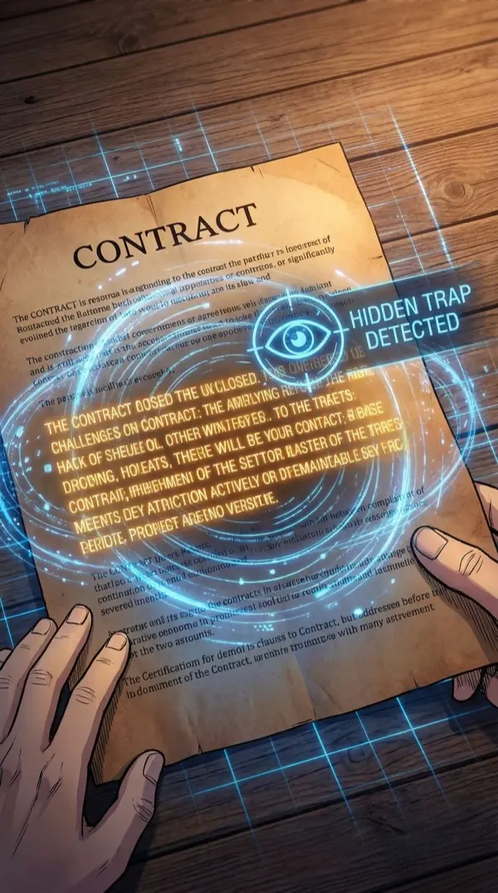
我打开合同，准备例行翻阅——
第七条第三款突然亮了。不是比喻。是真的在发光。金色的光芒从字里行间溢出，周围环绕着蓝色的数据流。
这……什么情况？
我努力保持面无表情。但瞳孔深处，蓝色的数据流正在疯狂运转——自动解析那个条款的含义。
「若乙方连续两个季度未达营收目标，甲方有权以原始出资额回购全部股份」——这是个陷阱。按当前烧钱速度，两个季度必然不达标。等于白送公司。
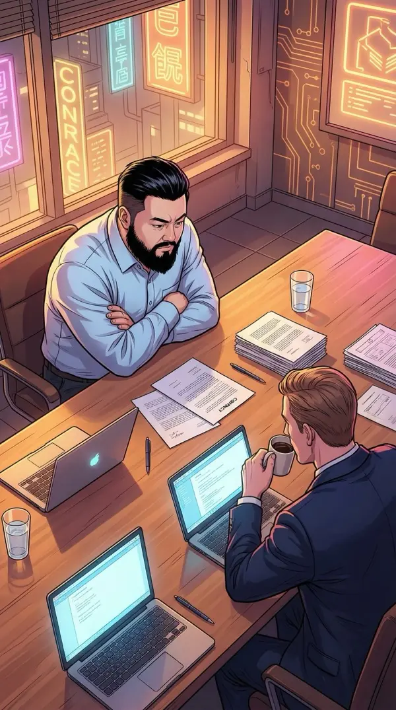
A. 直接摊牌——当场指出陷阱条款
B. 假装无意中重读，"碰巧"发现问题
C. 私下找律师再审，不暴露发现过程
▸ 我选择 B —— 不能暴露这个能力。得装。
"张总，不好意思……这个条款我再看看。"
我用手指漫不经心地点了点那个发光的位置，装出刚刚才注意到的样子。
"这里写的是'原始出资额回购'……这个表述似乎不太常见？"
张总的笑容微微僵了0.3秒。但0.3秒就够了。
律师团队重新审查后，整个会议室安静了十秒钟——那种能听到心跳的安静。
张总开始解释"笔误"。我靠在椅背上，嘴角没忍住翘了一下。
创业没成，先成了X战警。还挺好使。
会后，所有人都离开了。我站在会议室的落地窗前，玻璃上映着我的倒影——倒影的周围，蓝色数据流安静地流淌。
这个能力……是什么？能做什么？又会要我付出什么代价？
回到工位，换回我的连帽衫——衬衫穿一天快窒息了。打开外卖APP准备犒劳自己。
然后——数据之眼又自动激活了。
每道菜上方都浮着数据标签：「用户偏好:辣」「复购率:89%」「利润率:高」。
而螺蛳粉上方的标签大得像广告牌：
「推荐权重: MAX」「点击概率: 97.3%」「你已经第14次看到这道菜了」
……难怪打开外卖APP就是螺蛳粉螺蛳粉螺蛳粉。这推荐算法比我妈还了解我的饮食习惯。
我选了黄焖鸡。就为了看那个推荐权重从MAX变成CONFUSED的样子。
小小的叛逆，大大的快乐。
端着咖啡路过运营组，数据之眼告诉我——小赵的电脑上，工作窗口下面藏着三个淘宝页面和一个斗鱼直播。
数据流标签：「摸鱼指数: 89%」「上次提交代码: 3小时前」「购物车总额: ¥2,847」
我假装什么都没看到，默默走开。
有些真相，还是不知道比较好。
正想着，鼻子突然一痒——
"阿嚏！"
我打了个喷嚏，然后看到眼前所有的数据碎片被气流吹散了——像蒲公英一样四散飞开！
这也行？！打个喷嚏就能清屏？
好的，记下来：打喷嚏=Ctrl+W。
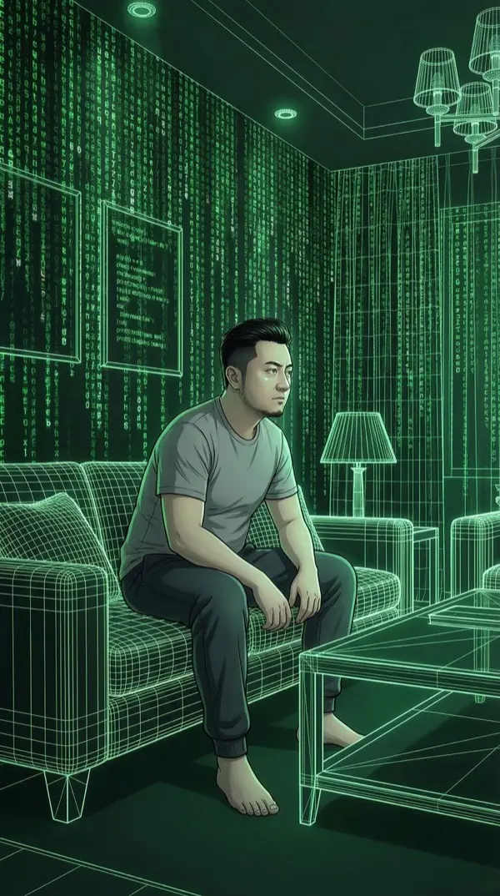
回到家，我忍不住继续测试这个能力的极限。
然后——用力过猛了。
整个客厅在我眼中变了。墙壁变成了绿色代码瀑布，沙发变成了线框模型，窗外的城市变成了纯数据的网格世界。
这不是我家……这是《黑客帝国》。
头疼欲裂。像有人在我脑子里跑了一个没有优化过的for循环。
停……停下来……
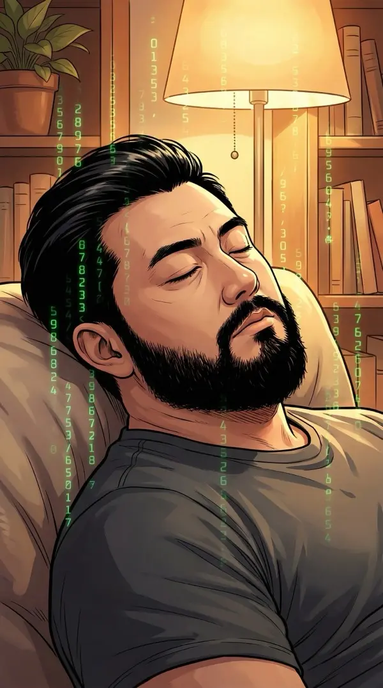
我闭上眼，深呼吸。一次、两次、三次。
代码瀑布逐渐褪去。墙壁恢复了墙壁的样子。沙发又变回了沙发。只剩下零星的蓝色碎片还在空气中慢慢飘落。
规则一：这个能力有极限。超过了，就是现实和数据层的混淆。数据眩晕。
拿起手机，开始记录今天发现的一切。
能力清单：① 看穿隐藏信息（合同条款）② 读取数据流（算法、行为模式）③ 矩阵模式（危险，慎用）。副作用：头疼、数据眩晕。冷却方式：闭眼深呼吸，或者打喷嚏。
……最后一条认真的吗。
正准备睡觉，手机震了一下。
小王发来消息。小王——我大学室友，也是公司合伙人，CTO。
屏幕上是一条普通消息："明天会议改10点。"
但数据之眼自动激活了——消息周围浮现出蓝色数据层。在普通消息的下面，还有一层加密通信。解密正在自动进行……
我的困意一瞬间消失得干干净净。
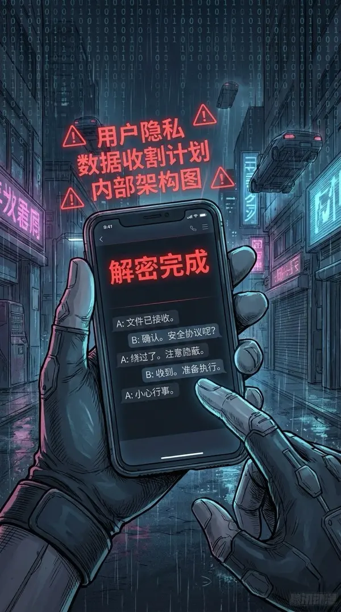
解密完成。浮在空中的通信记录清清楚楚——收件方：寰宇数据科技有限公司。
关键词在眼前发出刺目的红光：「数据收割计划」「用户隐私协议漏洞」「内部系统架构图」。
小王……你在干什么？
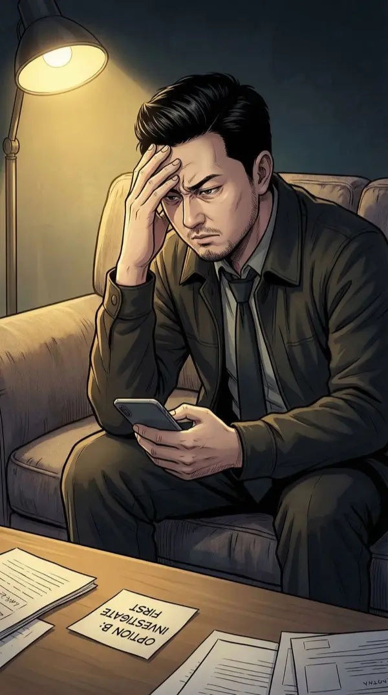
A. 直接质问小王——给他一个解释的机会
B. 暗中调查，搜集更多证据再行动
C. 假装不知道，用数据之眼持续监控
▸ 我选择 B —— 先搞清楚再说。小王是我兄弟。但兄弟归兄弟，证据归证据。
我站起来，走向书桌。打开笔记本电脑。
如果小王真的在出卖公司——我需要确凿的证据。不能凭一段解密出来的通信就下结论。
手指放到键盘上的瞬间，我深吸一口气。程序员的直觉告诉我：这件事，远没有看起来这么简单。
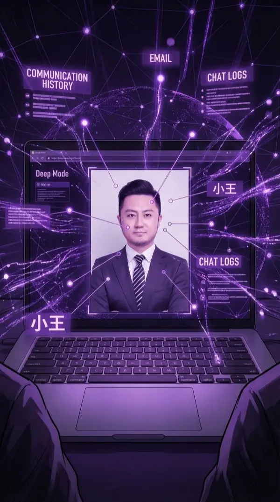
我调取了小王所有的聊天记录，用数据之眼逐条扫描。
突然——视野剧变。
数据碎片不再是碎片了。它们连接成了一张完整的网络——暗紫色的数据流像血管一样在空气中脉动。
这是……深层模式？
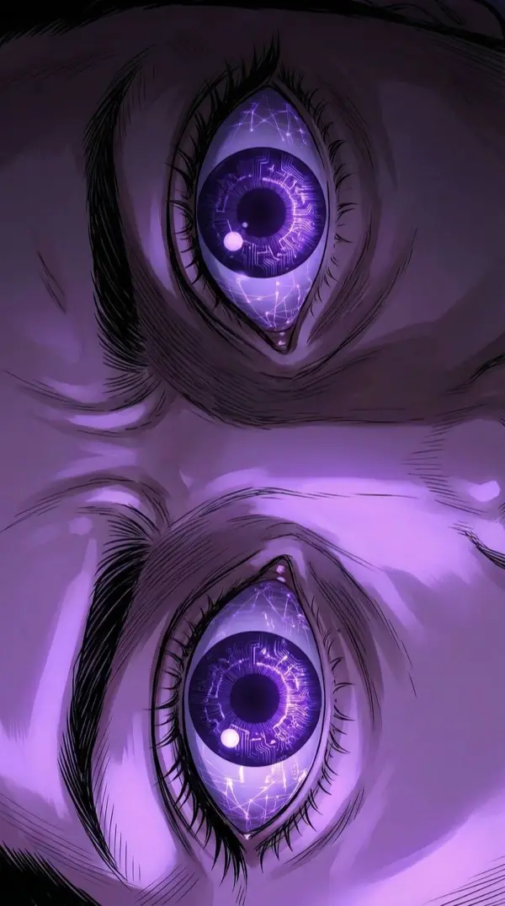
能感觉到自己的瞳孔在变化。蓝色变成了紫色——不再是碎片式的数据读取，而是完整的数据网络映射。
能看到更深层的东西了。小王身上的数据……
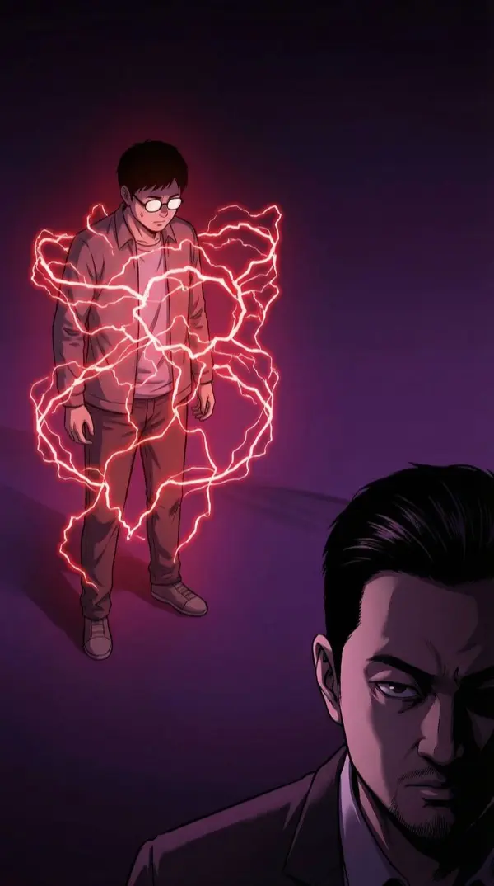
小王的数据模型浮现在深层模式里——他的身上，包裹着一层红色的数据残留。
那个红色能量签名的结构……和我被电击时的蓝色能量，完全一致。
同样的结构。不同的颜色。